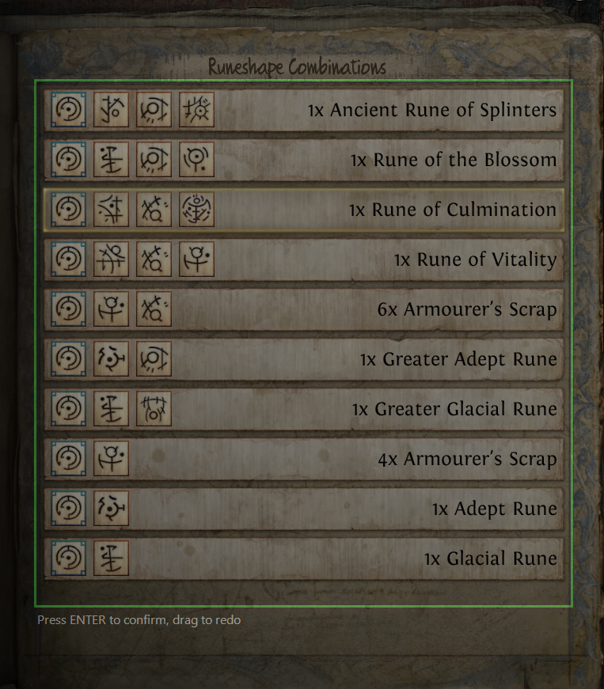
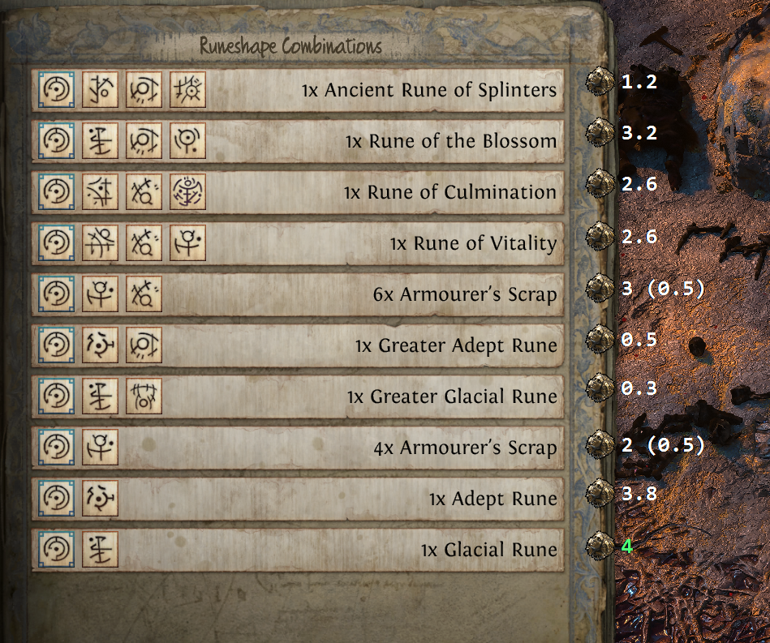
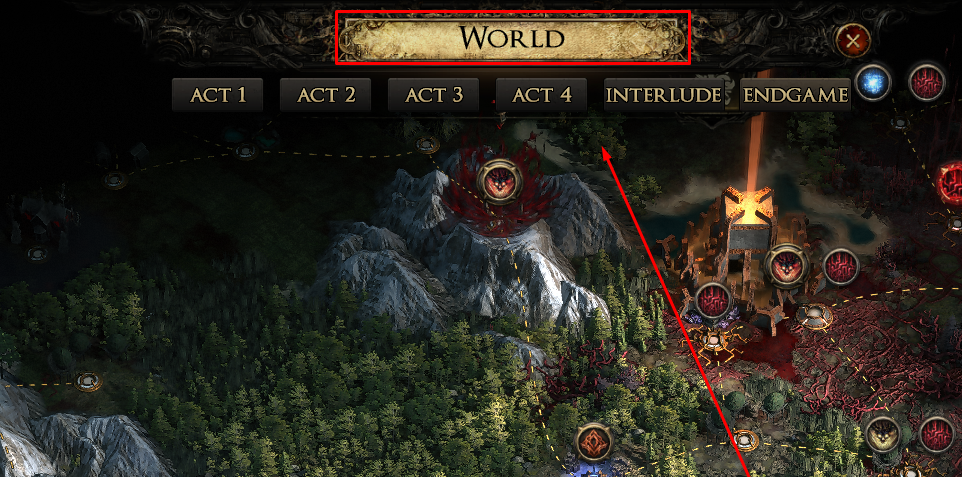

A screen overlay for Path of Exile 2 that reads your currency-exchange list and shows live poe.ninja prices right next to each item.
Open a currency / reward list panel in game, and the tool reads the item names on screen and draws the current market price next to each one — so you never have to alt-tab to poe.ninja to know what a stack is worth.
Use the League dropdown at the top of the window to match the league you’re playing. It includes both the standard (softcore) league and its Hardcore variant — e.g. Runes of Aldur and HC Runes of Aldur. Pick the right one so prices come from the matching poe.ninja economy. Switching re-fetches prices automatically, and your choice is remembered next time.
Calibration tells the app where on your screen the in-game list appears. You only need to do this once (and again if you change resolution or move the panel).

Click Start, then open a list panel in game. Prices appear to the right of each row. For stacks, the line shows the total followed by the per-item price, e.g. 2 (0.5 each).

Uncut skill, spirit and support gems are now priced too. Because a gem’s value depends on its level, the tool matches the exact gem type and level shown on the item — an Uncut Spirit Gem (Level 19) is priced as a level-19 spirit gem, not a level-18 one.
? instead of a price — it fills in as soon as it gets a clean read. This is on purpose: neighbouring gem levels can differ several-fold in value, so the tool would rather show nothing than a confidently-wrong price.With the Island Rumour helper enabled (in Settings), the app watches the Atlas and, when you open an Uncharted Waters / Island Rumours panel, shows each rumour’s map, mods and rating beside it — read from a community-maintained spreadsheet.
To know when you’re on the Atlas, it looks for the “WORLD” label at the top-centre of the map. This is found automatically by default. If you play in windowed mode or a custom resolution and the rumour overlay never appears, you can point the app at the label yourself:

When the app starts it quietly checks GitHub for a newer release. If one is available, a red “Update available” link appears at the bottom of the window — click it to open the download page. If you’re offline or already up to date, nothing happens and no link is shown.
| Key | Action |
|---|---|
| F4 | Recalibrate the panel region |
| F5 (default) | Start / stop scanning — rebindable (see below) |
| F3 | Toggle debug boxes (shows the scanned region + per-row boxes) |
| ESC | Hide the overlay (also fires when you close the panel) |
| Ctrl + Click | Hide the overlay (the in-game “purchase” gesture) |
To use a different Start/Stop key, click Rebind next to Start/Stop key in the app, then press the key you want — it’s saved and takes effect immediately. F3, F4, ESC and Ctrl are reserved (they’re used for the actions above); press ESC to cancel.
uiohook.dll) so F3/ESC/Ctrl+Click work while the game has focus. Some AV flags this generically; it’s required for the hotkeys.debug.cmd (see below) to run with diagnostics, then send the log.Found something wrong, or have a request? Please open an issue on GitHub:
github.com/pedro-quiterio/PoeAncientsPriceHelper/issues
To make a bug easy to fix, include a diagnostics log:
scan_log.txt (prices) and/or rumour_scan.txt (rumours), plus a screenshot of what you saw, to your GitHub issue.